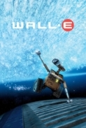

FYC://WALL E 2008 1080p BrRip x264 YIFY
=-=-=-=-=-=-=-=-=-=-=-=-=-=-=-=-=-=-=

Home
Download/Stream:
Magnet
Torrent
Play now (Stream)
Descption:
WALL-E is the last robot left on an Earth that has been overrun with garbage and all humans have fled to outer space. For 700 years he has continued to try and clean up the mess, but has developed some rather interesting human-like qualities. When a ship arrives with a sleek new type of robot, Wall-E thinks he's finally found a friend and stows away on the ship when it leaves.